嵌入式开发中，中断的理解和使用对开发人员来说至关重要，如果不能很好的理解和使用中断，那么在查找和解决问题时很可能一头雾水，无从下手。本文着重从链接文件、Map文件及代码角度梳理中断程序是如何被找到和执行的。本文基于英飞凌Tc277芯片讨论，Tc2xx/Tc3xx类似。
英飞凌中断向量表入口访问理解
设计中断之前，需要先理解如下几个问题：
中断向量表基地址在哪里定义？
中断向量表为每个中断条目预留多少空间？
在每个中断条目中如何跳转到中断函数？
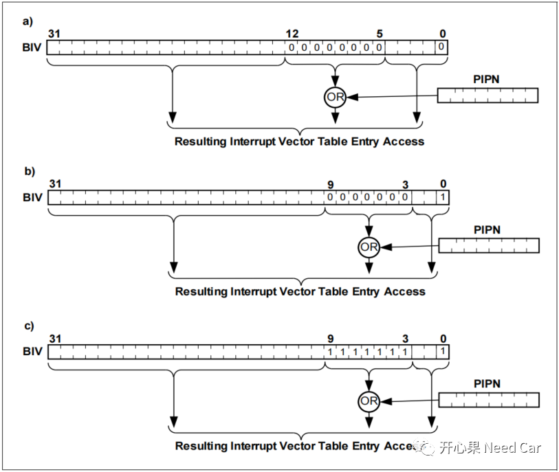
如上图，目标芯片32Bit。在英飞凌产品中，中断入口条目访问的方式有3种，如上所示，本文只讨论常用的方式a。
(1)中断向量表基地址在哪里定义？
答：一般将CPU中断向量表的基地址定义在链接文件中，这里以*.lsl链接文件为例，如下所示，在链接文件中定义CPU0中断向量表的基地址为0x800F0000。
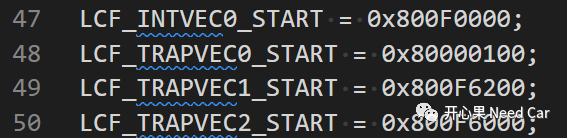
一般会将中断函数在链接文件中做弱声明，或者使用如下方式，每个中断定义一个SECTION。
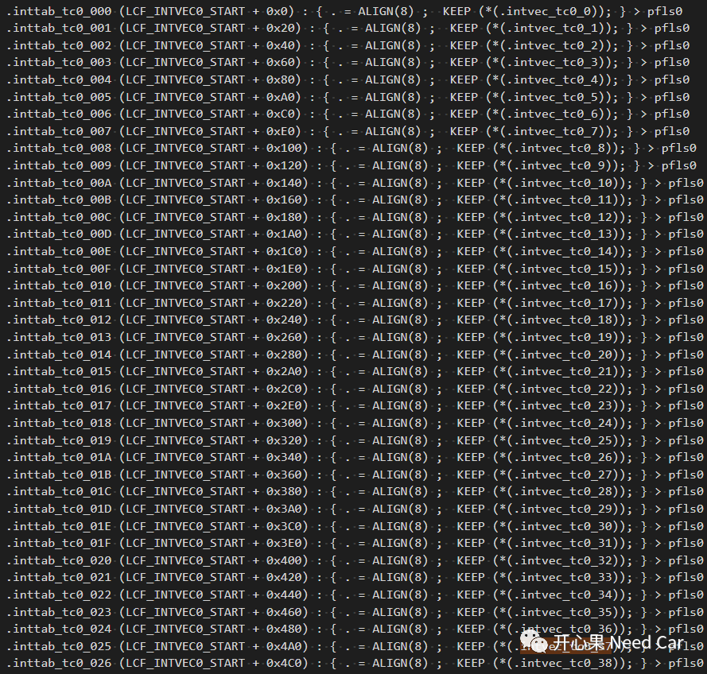
中断向量表的基地址定义以后，CPU或者DMA是如何准确找到该地址的入口位置呢？
答：在芯片中有一个特殊功能寄存器(BIV)存放中断向量表的基地址，如下所示：
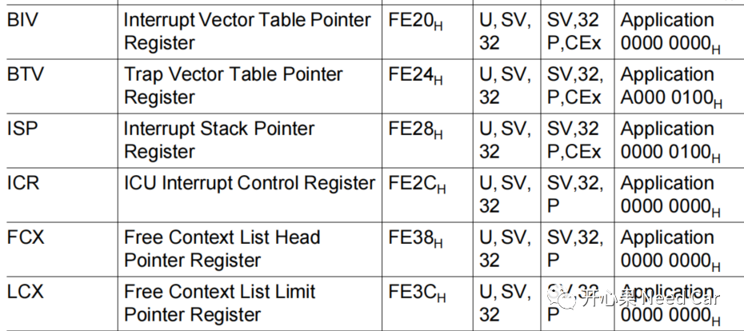
BIV赋值操作，一般在启动代码中实现，如下所示：
#define CPU_BIV 0xFE20 /* Load Base Address of Interrupt Vector Table. we will do this later in the program */ __mtcr(CPU_BIV, (uint32)__INTTAB(0)) |
注意：在对特殊功能寄存器进行操作时，不能对地址直接操作，必须使用编译器指定的内嵌功能函数操作，本例使用__mtcr对BIV进行赋值。
（2）中断向量表为每个中断条目预留多少空间？
答：tc277为每个中断条目预留32Byte或者8Byte。这里只讨论使用32byte情况。
基地址确定以后即可为CPU中断条目分配空间，Tc277中的每个CPU可以设置255个中断，也就是说每个CPU可以有255个中断向量号（1~255,0是无效中断向量号），且CPU的中断向量号越大优先级越高。如果所有中断均使用，需要分配的空间32*255Byte，实际应用中并不是所有中断都打开。
（3）在每个中断条目中如何跳转到中断函数？
答：使用方式a可以看出，中断条目所在位置由中断向量号和中断向量表基地址决定。中断向量号可以在1~255任意配置。
举例：配置STM0的中断向量号为37，则STM0的中断条目访问地址 = （(37<<5) | 0x800F0000） = 0x800F04A0。注意，0x800F04A0并不是中断函数的地址，跳转中断函数是在条目空间中通过跳转指令实现的。
中断仲裁
在这里再提一下中断的仲裁过程。如下图，中断使能以后，满足中断触发条件后，需要将中断向量号、中断服务者（CPU或者DMA）、ECC信息提供给中断路由模块（IR），中断向量号已经说过，结合中断向量表基地址可以让中断服务者找到准确的中断条目入口地址，进而执行目标功能或者调用中断程序。中断向量号大的优先获得中断服务者的使用权，中断服务者对中断信息进行校验，如果信息正确则执行中断功能，否则报错给SMU（安全管理模块）。
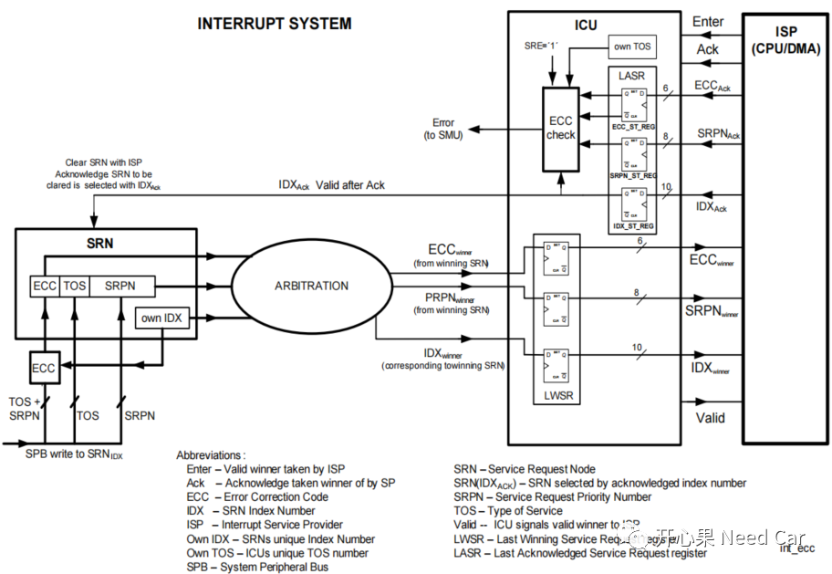
*.map文件中的中断条目
由*.map文件可以看出，在中断条目（每个中断条目占用32 bytes）中，只使用了0xe字节空间(最大可用32 bytes，如果32 bytes可以实现中断需要操作的功能，也可以不跳转到中断函数)，而就这14 bytes指令实现了中断函数的跳转。
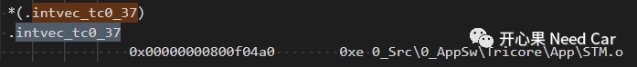
STM0的中断发生以后，通过中断向量号与中断向量表基地址查找到中断条目的入口地址0x800F04A0，在此地址开始继续执行指令，可以看出14 Bytes指令的最后两个即是跳转指令，即跳转到真正的中断处理函数位置。
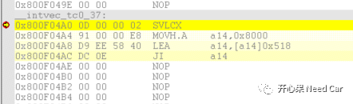
看到这，有点好奇这14 bytes指令哪里来的？
看一下代码，是不是和上图的操作指令一摸一样，本例使用了__asm编写部分中断功能，具体不在此展开讨论。
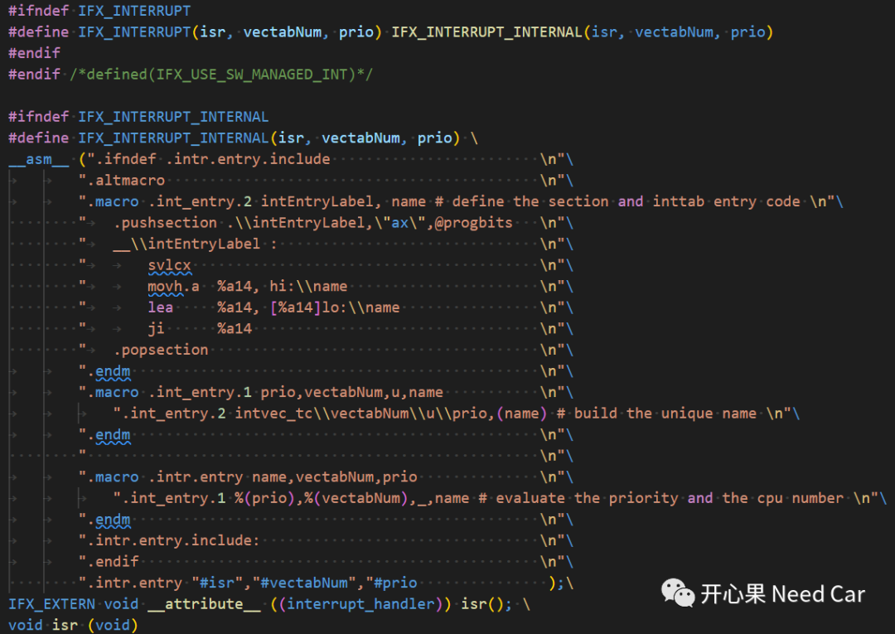
如下图，最后跳转的地址(a14寄存器中的地址)是0x80000518，即中断函数地址。
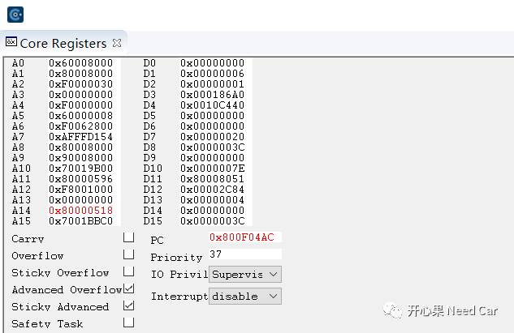
最终执行用户编写的中断函数stm0Sr0ISR。
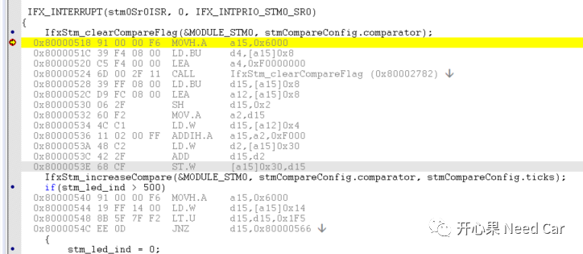
中断函数stm0Sr0ISR在*.map文件标识如下所示，对应地址0x80000518：
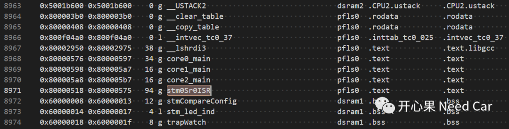